10 部片单 · 恐怖 / 科幻 / 惊悚 / 悬疑 / 剧情
| # | 片名 | 类型 | 评分 / 状态 |
|---|---|---|---|
| 01 | 遗传厄运 | 恐怖 / 心理惊悚 / 家庭悲剧 | 7.2 / 90% / 87 |
| 02 | 它在身后 | 恐怖 / 惊悚 / 青春 | 6.6 / 95% / 83 |
| 03 | 机械姬 | 科幻 / 惊悚 / 心理 | 7.5 / 92% / 78 |
| 04 | 彗星来的那一夜 | 科幻 / 悬疑 / 心理剧 | 8.6 / 88% / 65 |
| 05 | 利刃出鞘 | 悬疑 / 犯罪 / 黑色喜剧 | 8.3 / 97% / 82 |
| 06 | 看不见的客人 | 悬疑 / 惊悚 / 犯罪 | 8.8 / 8.0 / 1.72 亿元 |
| 07 | 消失的爱人 | 惊悚 / 悬疑 / 剧情 | 8.7 / 87% / 79 |
| 08 | 哭声 | 悬疑 / 恐怖 / 剧情 | 7.3 / 99% / 7.4 |
| 09 | 塔尔 | 剧情 / 心理惊悚 / 音乐 | 91% / 93 / 7.4 |
| 10 | 杀人回忆 | 悬疑 / 犯罪 / 剧情 | 8.9 / 95% / 82 |
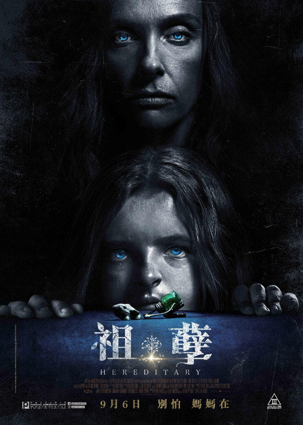
遗传厄运 Hereditary
外婆死了。然后这个家开始一件一件地碎掉。
剧情梗概
微型艺术家安妮·格雷厄姆的母亲艾伦去世了。安妮和母亲的关系一直很糟——母亲神秘、控制欲强、从不解释。葬礼之后，家里开始出现说不清的东西：阁楼上的灯光、被挪动的遗物、一种说不上来的气味。安妮去参加了丧恸互助会，认识了一个同样失去孩子的女人，对方教了她一套通灵的方法。与此同时，儿子彼得在妹妹查理意外身亡之后越来越不对劲，而家里有某种东西正在按部就班地把自己拼完整。
亮点
- 阿里·艾斯特的长片处女作，自编自导；在此之前他只拍过几部短片，本片在圣丹斯首映后直接炸开。
- 托妮·科莱特饰母亲安妮，被大量影评人认为是当年最被奖项忽视的表演；她凭此片拿下多个影评人协会最佳女主角。
- 亚历克斯·沃尔夫饰儿子彼得——片中那场家庭晚餐戏与紧接着的车内长镜头，是近年恐怖片里被逐帧分析最多的段落之一。
- 米莉·夏普洛饰小女儿查理，一个刻意写成「不讨喜」的角色，却成了全片最让人忘不掉的形象。
- 安妮做的那些微型屋是真实搭建的实体模型，全部由美术组按剧情时间线一格一格做出来，不是后期。
- 成本约 1000 万美元，全球票房约 8280 万美元，是 A24 当年最赚钱的项目之一。
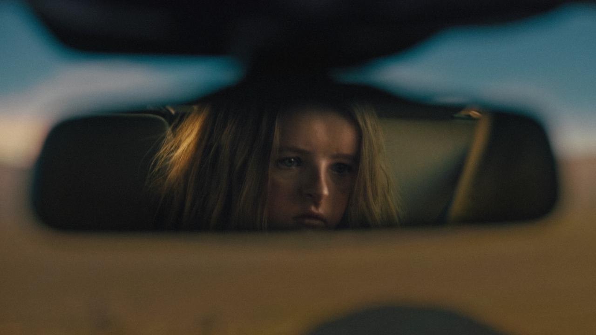
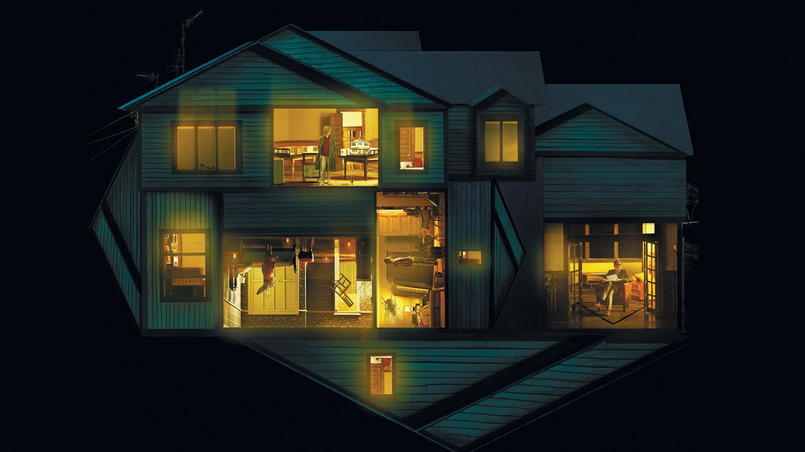
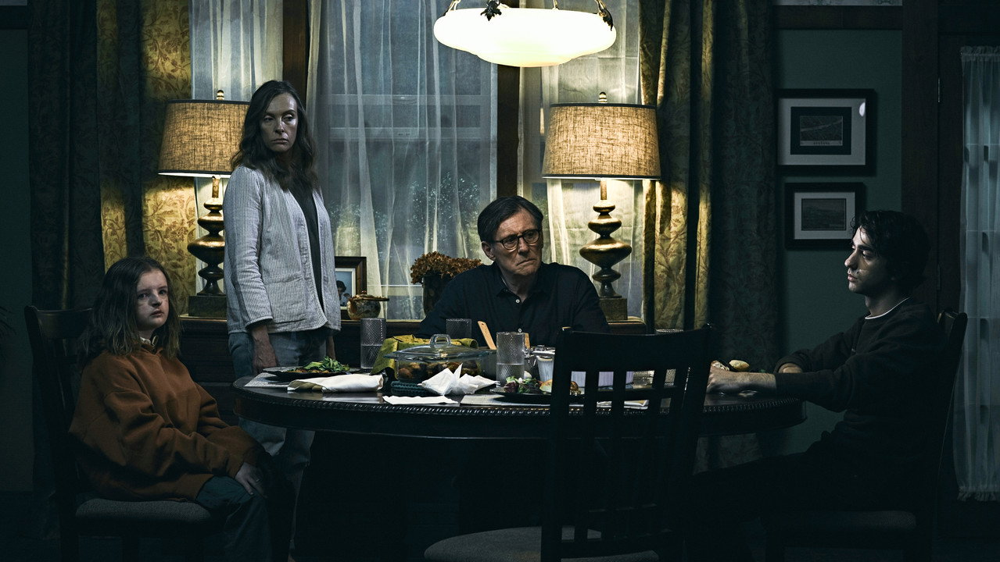
导演与主创 · 他们的历史作品

 仲夏夜惊魂
仲夏夜惊魂 博很恐惧
博很恐惧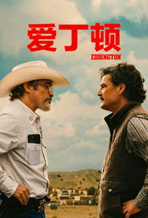
爱丁顿 The Strange Thing About the Johnsons
The Strange Thing About the Johnsons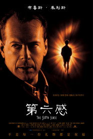
第六感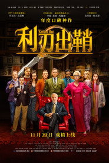
利刃出鞘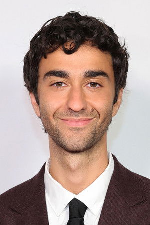
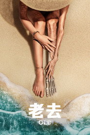
老去 寂静之地：入侵日
寂静之地：入侵日短评（轻微剧透）
《遗传厄运》真正的杀伤力不在吓人，在于它把「 grief 」拍成了一种会传染的东西。艾斯特先让你看一个家怎么因为一场死亡而错位——母亲不哭、父亲装没事、儿子愧疚到说不出话——然后才慢慢告诉你，这个家里的人从来就没有真正拥有过自己。它最狠的一笔是结构上：全片几乎没有一次「jump scare」是廉价的，每一次惊吓都同时是剧情推进，你看完回头想，会发现所有线索在第一场戏里就已经摆好了。托妮·科莱特的表演是全片地基，她不是在「演崩溃」，她是在演一个终于被允许崩溃的人。缺点要讲清楚：127 分钟里第二幕节奏明显放缓，几段通灵与仪式的展示偏长；结尾的仪式感对部分观众来说过于舞台化，会觉得「太满了」。豆瓣 7.2 与烂番茄 90% 的落差，正是它「影评人奉为神作、观众觉得太闷太重」的一贯处境。轻微剧透一句：影片从头到尾不给你一个能反抗的主角——因为「遗传」这件事，本来就没有人可以签同意书。
为什么值得一看
喜欢《闪灵》《仲夏夜惊魂》那种把家庭本身当成恐怖源的观众；能接受极端情绪强度、弑亲与自残内容的成年观众（R 级）。不适合想看爽片的人——它是「越想越冷」那一类。内地未引进，流媒体可看。
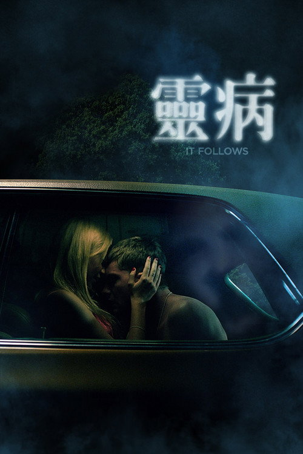
它在身后 It Follows
它一直跟在你后面。走路的速度，不快，也永不停下。
剧情梗概
底特律郊区的女孩杰伊和男友在车里过了夜。之后男友把她绑在轮椅上，告诉她一件事：他把一个「东西」传给了她。这个东西会以某个人的样子出现，只有被传的人看得见；它永远以步行的速度朝你走来，不跑，但从不休息。如果它追上你，你会死，然后它会回头去找上一个传给你的人。杰伊和妹妹、和两个邻居男孩必须在一周内想出办法——而唯一的办法，是把它再传给别人。
亮点
- 大卫·罗伯特·米切尔自编自导，这是他的第二部长片；前作是几乎没人看过的《不眠神话》(2010)。
- 麦卡·梦露饰杰伊，凭此片一举成为类型片新宠，之后陆续演了《独立日2》《长腿怪》《监视者》。
- 配乐由 Disasterpeace（Rich Vreeland）创作，一整套 80 年代风格的合成器作品，单独发行成专辑后口碑甚至超过影片本身。
- 影片在底特律实景拍摄，用宽银幕与极慢的横移镜头把一座衰败工业城市拍成了某种「永远的暑假午后无人区」。
- 成本约 130 万美元，全球票房超过 2300 万美元，是 2010 年代投入产出比最高的独立恐怖片之一。
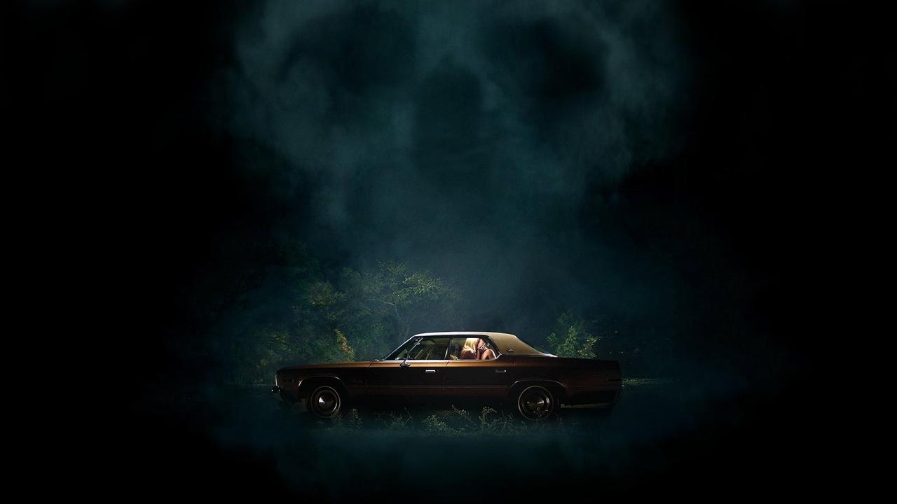
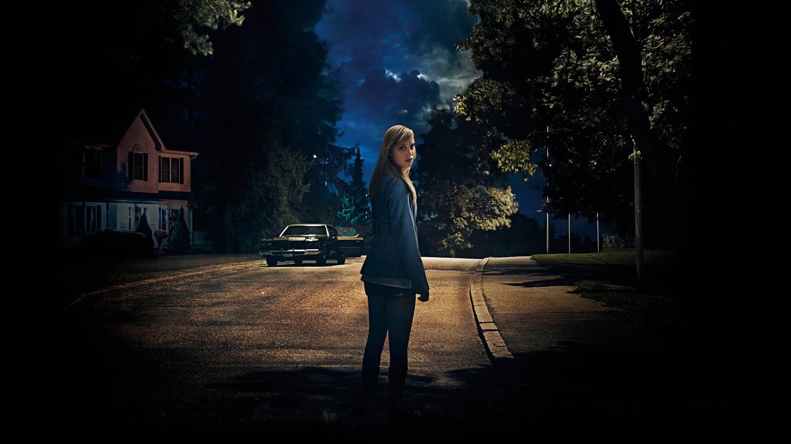
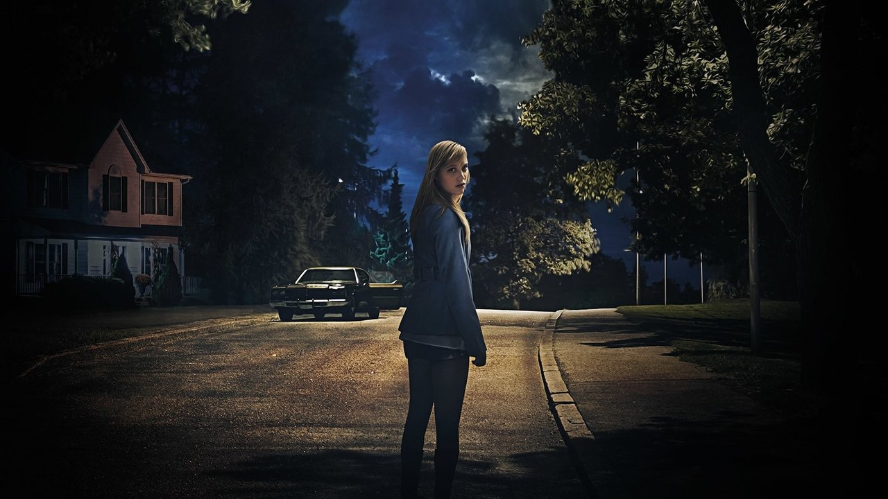
导演与主创 · 他们的历史作品
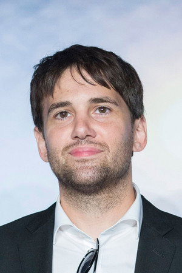
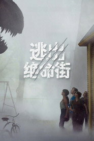
逃出绝命街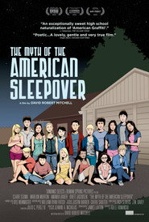
不眠神话
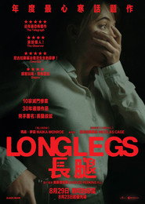
长腿 智慧囚屋
智慧囚屋 独立日2：卷土重来
独立日2：卷土重来 监视者
监视者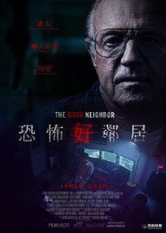
好邻居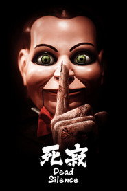
死寂短评（轻微剧透）
《它在身后》是一个「概念好到不需要解释」的设定：一个只能走路、却永远不放弃的追杀者。米切尔聪明的地方在于他真的按这个规则拍——它从不跑步，所以它出现的每个镜头都慢得让人发疯；你可以在任何一场戏的远景里找它，这本身就是一种持续的焦虑。它同时也是一个非常直白的性隐喻，但米切尔处理得比大多数同类片克制：影片没有道德审判，杰伊不是「因为做了什么」才被惩罚，她只是被选中了，这才是最让人不舒服的地方。技术上无可挑剔：360 度横移长镜头、合成器配乐、以及那种「80 年代和现在同时存在」的美术（片中出现的电子阅读器是关键线索）。缺点也说：中段逻辑有松散处，几个配角的功能性太强，豆瓣仅 6.6 说明它在中国观众里非常两极——喜欢的人奉为神作，不喜欢的人觉得「就这？」。轻微剧透：结尾那个牵手走在街上的镜头，是整部片最温柔也最冷的一笔——你不知道他们有没有甩掉它，而这正是它想留下的。
为什么值得一看
喜欢概念先行、靠氛围取胜的恐怖片的人；对 80 年代合成器配乐有感觉的观众；能接受慢节奏与开放式结局的人。几乎不靠血浆，靠的是「你一直在找它」这件事本身。内地未引进。
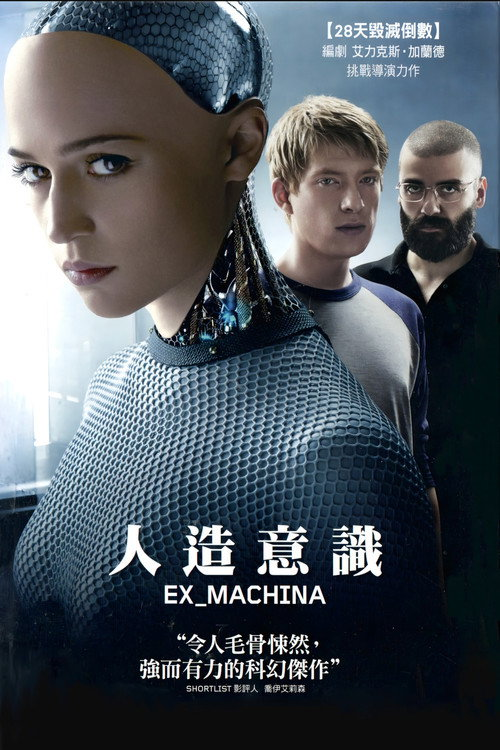
机械姬 Ex Machina
他以为自己是来测试机器人的。其实他是被测试的那个。
剧情梗概
程序员迦勒抽中了公司的内部大奖：去老板内森的深山别墅住一周。内森是全球最大搜索引擎的创始人，独居、酗酒、不信任任何人。他要迦勒做的事，是对他造出的人形机器人艾娃做一次图灵测试。七次会面，迦勒越来越确定艾娃有自我意识，也越来越不确定内森到底在做什么。第七天，局势反转，而反转的方向和所有人预想的都不一样。
亮点
- 亚历克斯·加兰的导演处女作；他此前是《惊变28天》《太阳浩劫》《特警判官》的编剧，是英国最被看重的类型片编剧之一。
- 艾丽西亚·维坎德饰艾娃，凭此片拿下英国电影学院奖最佳女配角提名与多个类型片表演奖，是她的国际突破作。
- 奥斯卡·伊萨克饰内森——片中那段与机器人共舞的戏是他自己设计的，加兰称其为「全片最让人不安的一分钟」。
- 影片拿下第 88 届奥斯卡最佳视觉效果奖，成本仅 1500 万美元，击败了当年的多部超级大片。
- 主拍摄地是挪威的 Juvet Landscape Hotel，全片几乎都在这栋玻璃房子与周边山谷完成，实景取代了大量绿幕。
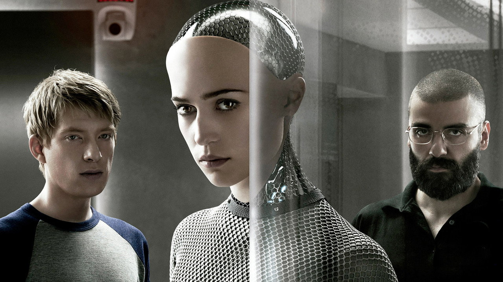
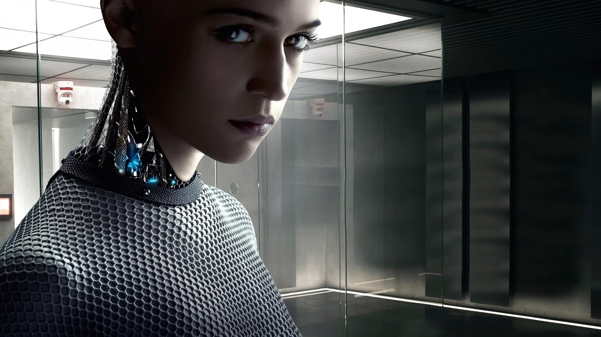
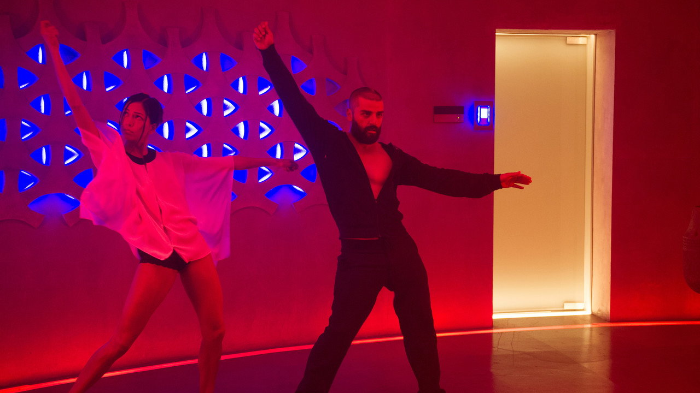
导演与主创 · 他们的历史作品

 惊变28天
惊变28天 特警判官
特警判官 海滩
海滩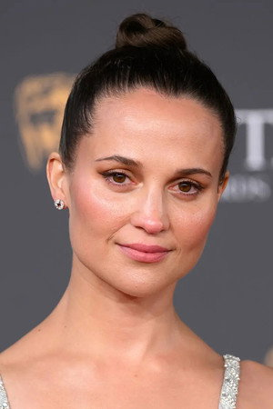
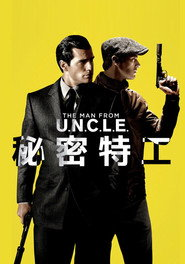
秘密特工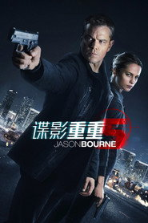
谍影重重5
 星球大战7：原力觉醒
星球大战7：原力觉醒 沙丘
沙丘 Frankenstein
Frankenstein 醉乡民谣
醉乡民谣短评（轻微剧透）
《机械姬》是一部被低估了的「房间电影」。加兰把整部片压在一栋别墅、四个人物、七次对话里，结果反而让 AI 这个议题变得具体——你不是在看「人工智能会不会毁灭人类」，你是在看一个房间里三个各怀目的的人互相试探。它最聪明的设计是视角：观众和迦勒一样被放在「测试者」的位置上，于是我们和迦勒共享同一个错觉——以为自己有主动权。艾娃的表演是全片的技术核心，维坎德必须在「像人」与「明显不是人」之间走一条极窄的线：她的动作有轻微的延迟感，这让每一次停顿都变成了威胁。缺点讲明白：第三幕的几处安排为了结果而牺牲了逻辑，内森这样一个极度多疑的人怎么会疏于防范，是绕不过去的槽点；影片的性别议题也有争议。轻微剧透：最后五分钟你会意识到，整部片里唯一真正通过了图灵测试的，是那个一直被当成工具的人——而且她早就选好了要利用谁。
为什么值得一看
喜欢《降临》《湮灭》《银翼杀手2049》那种安静、思辨型科幻的人；对「AI 到底有没有意识」这个问题有兴趣的观众；想看一部 108 分钟、四个角色就能撑住的密闭空间惊悚片的人。节奏偏慢，几乎无动作场面。内地未引进。
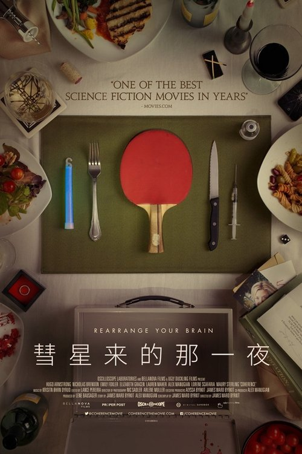
彗星来的那一夜 Coherence
彗星飞过的那一夜，八个人在一栋房子里吃晚饭。出去一趟，回来就不是原来那个了。
剧情梗概
八位老朋友在麦克和丽家聚餐。当晚有一颗彗星掠过地球。手机屏幕碎了、停电、断网。他们出门查看，发现街对面有一栋一模一样的房子，亮着灯，里面坐着八个人——是他们自己。从这个瞬间开始，每一次有人走出门，都可能走进另一个版本的世界；而回到屋里的那个，未必是刚才出去的那个。
亮点
- 詹姆斯·沃德·布柯特的长片处女作，自编自导；他此前长期担任《加勒比海盗》系列的故事板与前期视觉设计。
- 全片成本约 5 万美元，只用了 5 个晚上在一栋房子里拍完；演员每晚只拿到几页「今晚大致要发生什么」的提示，绝大多数对白是即兴的。
- 艾米丽·芭尔多尼饰艾姆，是整部片的事实主角——影片几乎所有的关键决定都由她做出。
- 片中「骰子 + 荧光棒颜色 + 照片」的编号系统是叙事的核心装置，剧本为此推演过一整套可能性表。
- 拿下 2013 年奥斯汀奇幻电影节最佳剧本、2014 年阿姆斯特丹奇幻电影节黑郁金香奖。
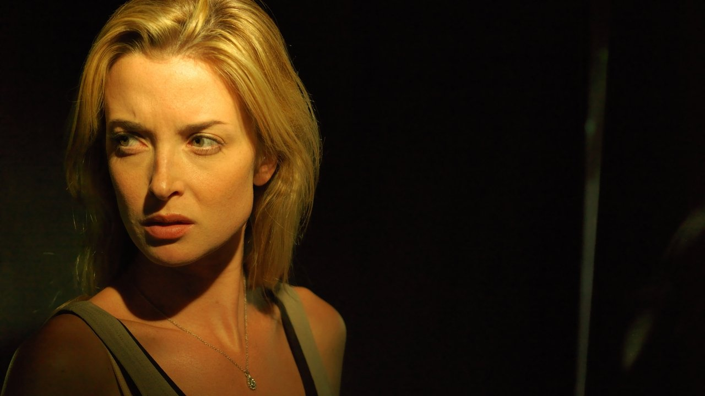
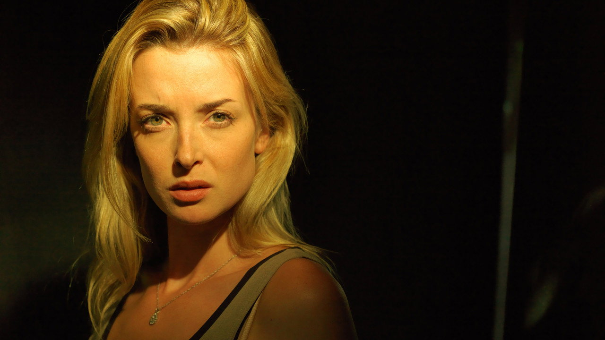
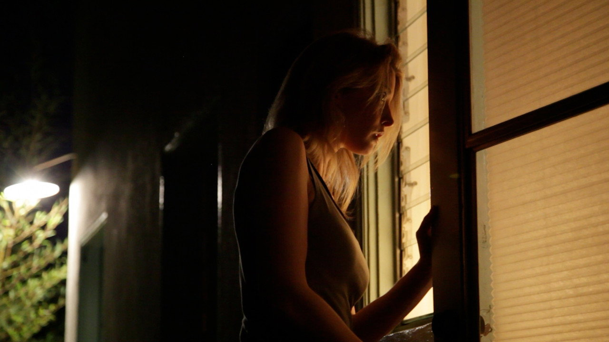
导演与主创 · 他们的历史作品
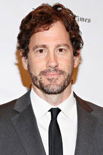
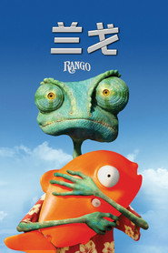
兰戈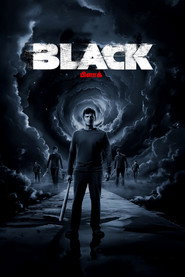
平行黑洞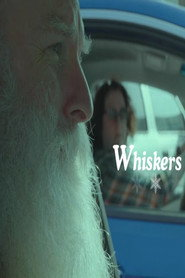
Whiskers - A Christmas Short Film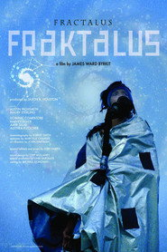
Fractalus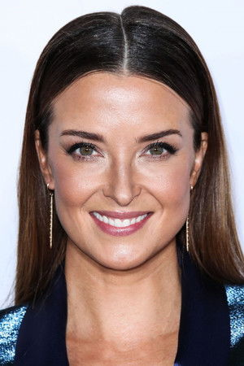
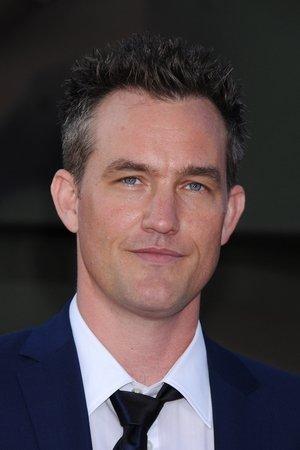
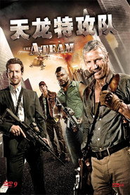
天龙特攻队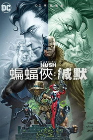
蝙蝠侠：缄默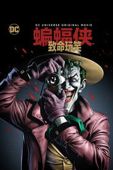
蝙蝠侠：致命玩笑短评（轻微剧透）
这是一部用 5 万美元讲清了「平行宇宙」的电影，而它的聪明之处在于：它根本没打算给你解释清楚。布柯特把科幻的部分压到最低，把全部力气放在「八个人在一栋房子里互相猜疑」这件事上——于是最可怕的不是量子退相干，是你发现身边的朋友可能已经不是你认识的那个版本，而他们也在怀疑你。影片前二十分钟那段看似闲聊的餐桌戏，回头看全是伏笔：每一句抱怨、每一个没说出口的遗憾，后面都会变成另一个时空里的行动动机。手持摄影和即兴对白让它有一种粗糙的真实感，反而比精雕细琢的科幻片更让人信服。缺点：它确实「糙」，摄影抖动、录音不匀、几个表演也偏业余；Metacritic 仅 65 说明影评人对它的技术层面并不宽容，豆瓣 8.6 则说明观众对「烧脑」的容忍度高得多——两者并不矛盾。轻微剧透：最后艾姆做出的那个选择，是整部片最阴暗的一笔，也是它真正想说的事——当你有机会换一个「更好的自己」时，你不会犹豫太久。
为什么值得一看
喜欢《这个男人来自地球》《彗星》《恐怖游轮》那种一屋一桌就能讲完的烧脑片的人；对小成本独立科幻有兴趣的观众；能接受手持摄影与即兴表演质感的人。喜欢工整大制作的可能会嫌它糙。内地未引进。
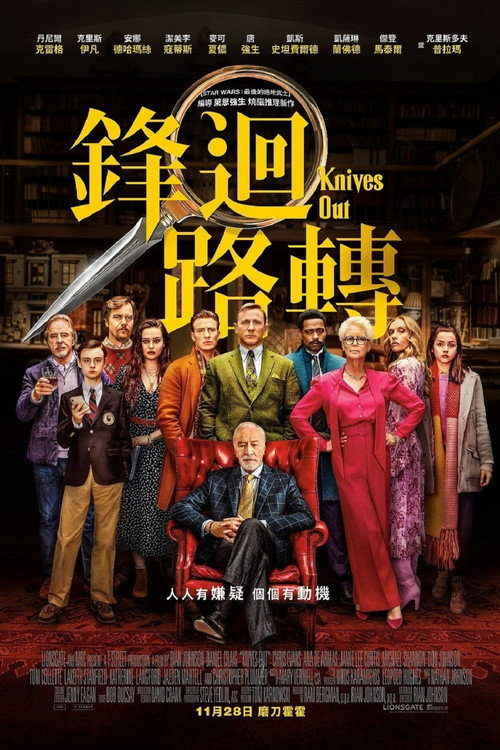
利刃出鞘 Knives Out
85 岁的推理小说家死在自己家里。屋里的每个人都有理由。
剧情梗概
知名犯罪小说家哈兰·斯隆比在生日派对后的第二天清晨被发现死亡，喉咙被割开，警方初步认定自杀。但有人匿名雇了私家侦探贝努瓦·布朗科。斯隆比家的每个人都很有钱、都很缺钱、都在那晚撒了谎：大女儿、女婿、不成器的小儿子、儿媳、护工、以及照顾哈兰的护士玛塔——她有个要命的特点，一说谎就会呕吐。布朗科要在这一屋子人里找出那个不是说谎的人。
亮点
- 莱恩·约翰逊自编自导；他把本片定位成对阿加莎·克里斯蒂式古典推理的一次「当代重写」，而不是解构。
- 丹尼尔·克雷格饰侦探布朗科，刻意用了夸张的美国南方口音；这个角色已成系列，续作《抽丝剥茧》《亡者归来》陆续推出。
- 安娜·德·阿玛斯饰护士玛塔，凭此片拿下金球奖音乐喜剧类最佳女主角提名，是她的国际突破作。
- 剧本获第 92 届奥斯卡最佳原创剧本提名，并拿下美国编剧工会奖最佳原创剧本。
- 成本约 4000 万美元，全球票房 3.13 亿美元，是 2019 年最赚钱的原创（非 IP）电影之一。
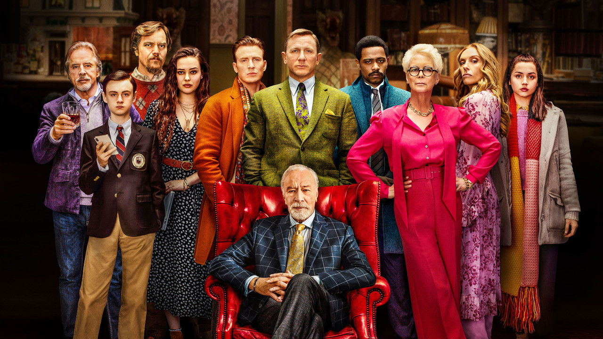
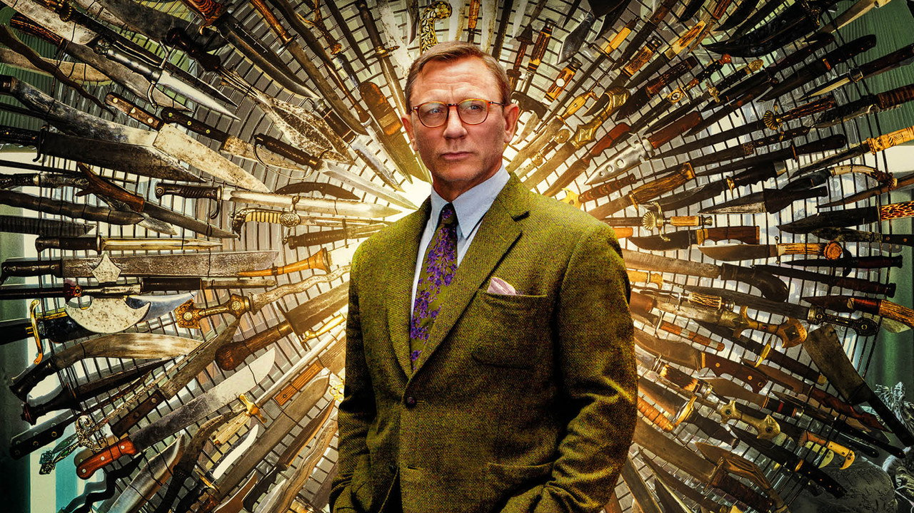
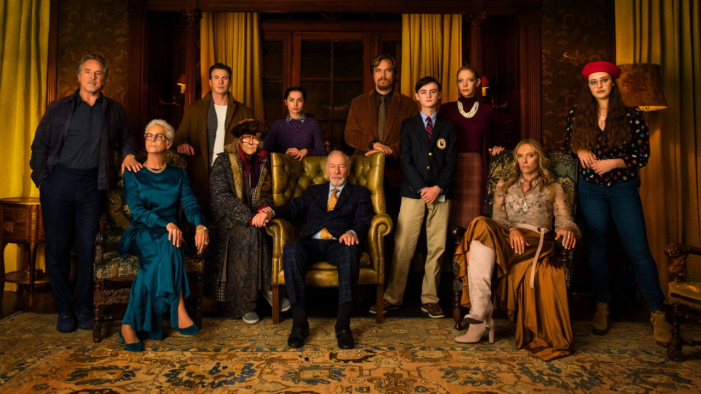
导演与主创 · 他们的历史作品
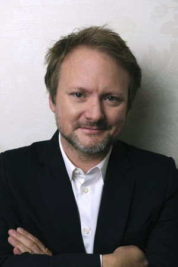
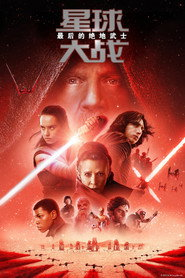
星球大战8：最后的绝地武士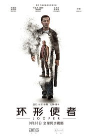
环形使者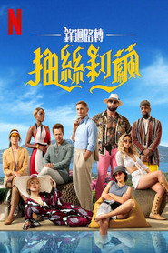
利刃出鞘2：抽丝剥茧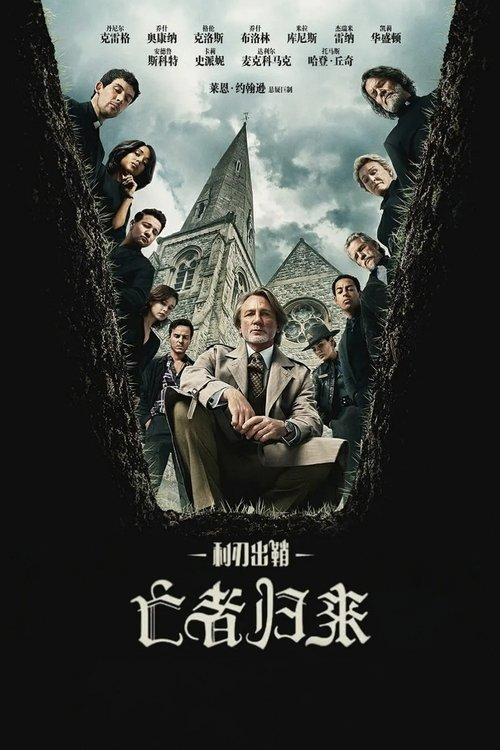
利刃出鞘3：亡者归来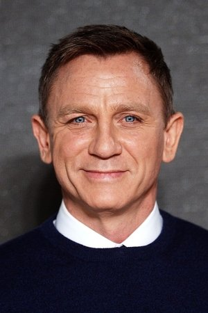
 007：大破天幕杀机
007：大破天幕杀机 007：幽灵党
007：幽灵党 银翼杀手2049
银翼杀手2049短评（轻微剧透）
《利刃出鞘》最聪明的地方是它提前告诉了你答案。约翰逊在影片三分之一处就把「谁干的、怎么干的」摊开了——然后你会发现，原来剩下的九十分钟才是真正的电影，因为它把「whodunit」换成了「what will they do about it」。这是一次漂亮的类型翻转：观众不再是猜凶手的侦探，而是看着一群人在真相面前露出本相。而它真正想说的是阶层——这一屋子白人自由派对着玛塔说「你就像我们家的人」，却在三分钟内就能把她牺牲掉，因为他们从来没真的把她当成家里人。克雷格的布朗科是全片的调味料，他的口音和做派夸张得恰到好处，让一部本该阴沉的片子始终保有喜剧的弹性。缺点也说：中段有几次信息交代略显刻意，靠人物自己「说出来」推动；结尾的视觉符号（那个咖啡杯）设计感太强。轻微剧透：影片最后那个俯拍镜头，玛塔站在阳台上、手里端着杯子、看着楼下那一家人——这个构图一句话说完了整部片的立场。
为什么值得一看
喜欢阿加莎·克里斯蒂式古典推理的人；想看一部不用害怕、可以带爸妈一起看的悬疑片的人；对「伪善的自由派富人」这个题材有兴趣的观众。PG-13，几乎没有血腥。内地曾于 2019 年公映，流媒体可看。
看不见的客人 Contratiempo
她说自己从没输过一场官司。她只有三个小时。
剧情梗概
企业家艾德里安在一间从内部锁死的酒店房间里醒来，身边是情人劳拉的尸体，他是唯一的嫌疑人。距离开庭只剩三小时，「从无败绩」的金牌律师弗吉尼亚·古德曼赶到他的公寓，要求他讲出全部真相。为了证明自己清白，艾德里安讲了第一个版本；律师一个漏洞一个漏洞地戳穿它，逼他讲第二个、第三个。而几个月前，在一条山路上，另一桩案子已经发生过一次了。
亮点
- 奥里奥尔·保罗自编自导；剧本改了 13 稿、写了一年多。他此前拍过《女尸谜案》《茱莉娅的眼睛》，是西班牙悬疑片的代表人物。
- 马里奥·卡萨斯饰艾德里安；阿娜·瓦格纳饰律师古德曼；何塞·卡罗纳多与芭芭拉·蓝妮分饰失踪青年的父母。
- 全片被称为「43 次反转」，结构上借用《罗生门》的套层叙述：一个叙述里套着另一个叙述，每一层的真假都要重新评估。
- 在西班牙点映时，500 名观众里只有约 5% 猜到了结局。
- 内地票房 1.72 亿元人民币，是当时在中国票房最高的西班牙电影；豆瓣超 145 万人评分，长期位列 TOP250。
导演与主创 · 他们的历史作品
短评（轻微剧透）
《看不见的客人》是一部「纯粹的机械装置」——它不打算感动你，也不打算讨论人性深度，它只想在一百分钟内把你骗四十次，而且它做到了。保罗的写法非常古典：密室、限时、单一场景、一个说谎的讲述者和一个不断推翻他的听者。这类结构最怕的就是「为了反转而反转」，但本片的每一次推翻都有新的物证或逻辑支撑，这让它的高密度经得起第二遍检查——这一点比大多数同类片强太多。它真正的主题其实很朴素：有权有势的人可以用一个谎言盖住一桩罪，然后用一百个谎言盖住这个谎言。所以最后站在他对面的不是警察，是一对没有任何资源的父母，他们唯一的武器是演技和时间。缺点也说：人物是功能性的，几乎没有心理纵深；看第二遍时所有反转都会失效，这是这类片的宿命。轻微剧透：影片最妙的设计是「时间」——那只一直在走的怀表和「三小时」的死线，因为真正的凶手并不是谋杀，而是拖延。
为什么值得一看
喜欢《利刃出鞘》《控方证人》《致命ID》那种高密度反转的人；想看一部「可以和朋友一起猜结局」的片子的观众。看过一遍就够，别被剧透。内地曾公映，各平台可看。
消失的爱人 Gone Girl
妻子在结婚五周年那天失踪了。客厅里有搏斗的痕迹。
剧情梗概
尼克·邓恩在结婚纪念日当天回家，发现妻子艾米不见了，客厅一片狼藉。媒体、警察、岳父母、邻居，所有人的目光都落在他身上。另一条线是艾米留下的日记：一本从甜蜜写到恐惧的日记，详细记录了这段婚姻如何一步步变质。两条叙述彼此打架，观众必须在它们之间选边——而你会选错不止一次。
亮点
- 大卫·芬奇执导；原著作者吉莉安·弗琳坚持亲自改编，保留了大量原著结构，包括那套日记体叙述。
- 裴淳华饰艾米，凭此片拿下奥斯卡、金球奖、英国电影学院奖、美国演员工会奖四项影后提名，是当年最被讨论的表演。
- 本·阿弗莱克饰尼克——芬奇选他的理由是「他本来就有一种让人不太想信任的气质」。
- 配乐由特伦特·雷泽诺与阿提喀斯·罗斯（《社交网络》《龙纹身的女孩》）创作，那套冰冷的嗡鸣成了影片的标志。
- 全球票房 3.70 亿美元，是芬奇职业生涯票房最高的电影之一。
导演与主创 · 他们的历史作品
 七宗罪
七宗罪短评（轻微剧透）
《消失的爱人》是芬奇拍过最「不体面」的一部片——他以前的片子再黑暗，多少还留着一个可以认同的角色；本片没有。它做的是一件更狠的事：先让你同情艾米，再让你恐惧艾米，最后让你发现恐惧和同情可以同时成立，而这才是最难受的。芬奇的处理极其冷静：他几乎不用手持，全片像一台机器在推轨，这种精确感反而让内容更冷。影片真正的议题不是「谁杀了谁」，是「婚姻作为一种表演」——尼克和艾米都在演一个对方想要的版本，演了五年，直到其中一个决定把这场表演变成武器。裴淳华的表演是全部：她必须让你相信两个完全矛盾的艾米都是真的，而她靠的不是「演坏」，是让「酷」和「失控」共用同一张脸。缺点也说：149 分钟略长，中段有几处铺陈可以收紧；对「媒体审判」的描写偏漫画化。轻微剧透：影片最后那个结尾不是妥协，是惩罚——它让两个人永远困在这段婚姻里，而那正是全片最恐怖的一幕。
为什么值得一看
喜欢《七宗罪》《社交网络》那种精确冷峻风格的观众；对亲密关系里的权力博弈有兴趣的人；想看一次「你以为你懂了其实你没懂」的叙事体验的人。R 级，含暴力与性场面，心理强度高。内地未引进，流媒体可看。
哭声 The Wailing
一个日本老人搬进了山里。然后村里开始出事。
剧情梗概
全罗南道谷城的一个山村接连发生灭门惨案：凶手杀完人后陷入呆滞，身上长出皮疹与脓疮。警察钟久是个没什么本事的普通人，靠直觉和「科学办案」混日子。当自己的女儿也出现同样的症状时，他开始相信这不是人干的。他去找了村里的萨满日光，也盯上了住在山里、被所有人指认的那个日本老人。警察、巫术、信仰——三套解释系统同时启动，而它们给出的答案互相矛盾。
亮点
- 罗泓轸自编自导，这是他继《追击者》(2008)、《黄海》(2010) 之后的第三部长片，也是沉寂六年后的回归作。
- 郭度沅饰警察钟久——他此前几乎只演反派，这是他第一次担纲主演，也是他职业生涯最重要的角色。
- 黄政民饰萨满日光；片中那场驱魔戏实拍了数小时，是全片技术上最复杂的一场。
- 国村隼（日本）饰被指认的「日本老人」；千禹熙饰始终身份不明的白衣女子「无名」。
- 影片入围第 69 届戛纳电影节非竞赛单元展映；韩国观影人次 532 万，位列 2016 年韩国本土片年度第 7。
导演与主创 · 他们的历史作品

 追击者
追击者 黄海
黄海 信仰黄海
信仰黄海
 军舰岛
军舰岛 老手
老手 从邪恶中拯救我
从邪恶中拯救我短评（轻微剧透）
《哭声》是一部关于「确认偏误」的电影。罗泓轸给了你三套解释：刑侦的、萨满的、基督教的，每一套在某个时刻看起来都完全成立——而每一次你选定一套，影片就安排一件事把它打翻。这才是它真正的恐怖来源：不是鬼，是「你永远不确定自己该信谁」。钟久这个角色设计得非常妙：他不是英雄，甚至不是个好警察，他是个被吓坏的父亲。他所有的判断都被恐惧驱动，而恐惧会让人抓住第一个能解释世界的说法。技术上它是近年最好的韩国类型片之一：山雾中的长镜头、雨夜的手持追逐、那场驱魔戏里鼓声与喘息的叠加，都压迫感极强。缺点必须说：156 分钟对一部悬疑片偏长，第二幕有重复感；它的暧昧是刻意的，但确实会让一部分观众在看完后感到被耍。豆瓣 7.3 与烂番茄 99% 的落差说明：影评人爱它的复杂，普通观众要的是一个答案。轻微剧透：影片最后十分钟推翻了前面所有的判断，而你此时才会意识到——前面两个多小时里你信过的每一件事，都是你自己选择相信的。
为什么值得一看
喜欢《追击者》《黄海》那种粗粝狠劲的观众；对宗教、民俗与「外来者恐惧」这些母题有兴趣的人；能接受 156 分钟、多义结局与强烈心理压迫的观众。含大量血腥与动物场面，敏感者慎入。内地未引进。
塔尔 Tár
她是这个时代最重要的指挥家之一。然后，一些旧事开始浮上来。
剧情梗概
莉迪亚·塔尔是柏林爱乐乐团的首席指挥，是坐上这个位置的第一位女性。她正在准备马勒第五交响曲的现场录音、一本新书，以及一场被业界盯着的继任安排。她身边是妻子（也是乐团首席）莎伦、一位野心不小的助手弗朗西斯卡，和一位她亲自挑选的俄罗斯大提琴手。一位前学生的自杀、一段被删掉的录音、一次次越来越失控的排练，把这个人一层层剥开。
亮点
- 托德·菲尔德自编自导；这是他继《不伦之恋》(2001)、《身为人母》(2006) 之后的第三部长片，中间隔了 16 年。
- 凯特·布兰切特饰莉迪亚·塔尔，拿下威尼斯电影节最佳女演员、金球奖剧情类影后，并获奥斯卡最佳女主角提名。
- 片中所有有源音乐都是现场实拍录音：布兰切特的钢琴、大提琴手索菲·考尔的演奏、德累斯顿爱乐乐团的排练，全部真演真录。
- 剧本是菲尔德为布兰切特量身写的；片中莉迪亚谈音乐的那些观点，有真实指挥家约翰·莫塞里担任顾问。
- 配乐由希尔杜·古德纳多蒂尔（《小丑》《切尔诺贝利》）创作；因「原创音乐占比不足」被奥斯卡判定不具备评奖资格。
导演与主创 · 他们的历史作品
 大开眼戒
大开眼戒 雷神3：诸神黄昏
雷神3：诸神黄昏短评（轻微剧透）
《塔尔》是一部关于权力的电影，只是把权力放到了古典音乐这个最讲究「传统」的场域里。菲尔德做的第一件正确的事是：他没有把莉迪亚写成一个符号，而是写成一个真的懂音乐、真的有才华、也真的滥用权力的人——如果她是个草包，这部片就毫无意义了。正因为她配得上那个位置，她被拖下来的过程才有分量。影片的恐怖是渐进的，而且几乎全靠声音：一个节拍器的滴答、走廊里的哭声、邻居的狗叫声、一段被误认成「远处的警报」的噪音。你会发现整部片里莉迪亚唯一真正失控的时刻，都是听觉先崩的。布兰切特的表演是近年最完整的一次：她没有演「坏人」，她演的是一个把「我不解释」当成特权的人。缺点必须说清楚：158 分钟、大量专业术语与德语段落，对古典音乐没有兴趣的观众会非常难熬；它也不给结论，喜欢明确道德判断的人会恼火。轻微剧透：最后那场戏里她指挥的是一段电子游戏的配乐，而台下的观众狂热——那一刻你会明白影片从头到尾在问的那个问题：到底是艺术在被消费，还是她？
为什么值得一看
喜欢《黑天鹅》《爆裂鼓手》那种「技艺与崩坏」母题的观众；对古典音乐、权力结构或「取消文化」议题有兴趣的人；想看布兰切特生涯最佳表演的影迷。节奏缓慢、信息密集，需要专注。内地未引进。
杀人回忆 Memories of Murder
雨夜，红衣服的女人，和一个永远抓不到的凶手。
剧情梗概
1986 年，京畿道华城郡。农田边的排水渠里发现一具女尸，双手被反绑，被自己的衣服勒死。此后数年，同样手法的案件接连发生：全部在雨夜，受害者全部穿红衣。当地刑警朴斗满靠「眼神」办案——他声称看一眼就知道谁在说谎；从首尔调来的徐太允靠档案、指纹与逻辑。两人从互相看不上，到不得不合作。而那份送去美国做比对的 DNA 报告，每一次回来都是「排除」。
亮点
- 奉俊昊的第二部长片，自编自导（与沈成宝合写）；改编自韩国第一起真正的连环杀人案「华城连环杀人案」。
- 宋康昊饰朴斗满，凭此片拿下韩国大钟奖最佳男主角，也是他第一次被国际影坛注意到。
- 金相庆饰首尔来的刑警徐太允；朴海日饰嫌疑人之一（他后来在《汉江怪物》里再次与奉俊昊合作）。
- 影片在韩国观影人次超过 525 万，是 2003 年韩国本土票房冠军；豆瓣 8.9，长期位列 TOP250。
- 真实案件直到 2019 年才确认真凶李春宰，此时距离影片上映已 16 年；奉俊昊曾说这是他职业生涯里最沉重的一次「被现实追上」。
导演与主创 · 他们的历史作品

 寄生虫
寄生虫 玉子
玉子 编号17
编号17 寄生虫
寄生虫 汉江怪物
汉江怪物 我要复仇
我要复仇短评（轻微剧透）
《杀人回忆》最伟大的地方，是它拍了一部「没有破案」的刑侦片，而且让你看得比任何破案片都难受。奉俊昊把类型片的契约整个翻过来：观众习惯了「线索—推理—抓人」，而这里每一次接近真相都被现实掐断——证据被毁、证人自杀、DNA 排除、嫌疑人一个个被排除。这种反复的落空累积到最后，变成了一种比恐惧更沉的东西：不是「凶手还在外面」，而是「我们可能永远不知道」。宋康昊的朴斗满是全片的灵魂，他不是无能，他是生错了时代——他那一套「看眼睛」的土办法在 1986 年的韩国乡下本来就管用，直到遇上了一个不按常理的凶手。影片的韩国性也极其具体：军政府时代、宵禁、简陋的刑侦条件、小镇的流言，全都压在案件上。缺点也要说：节奏在第三幕略有拖沓，几处喜剧化处理（比如朴斗满的迷信）会让部分观众出戏。轻微剧透：最后那个打破第四面墙的镜头是全片最著名的一笔——宋康昊盯着镜头，而你知道他看的不只是凶手。
为什么值得一看
喜欢《十二宫》《真探》第一季那种「案子没破但人已经碎了」的观众；想看奉俊昊如何从一个类型片导演变成大师的人；对华城案或韩国现代史有兴趣的人。节奏偏慢，情绪沉重，不适合当爽片看。内地未引进。